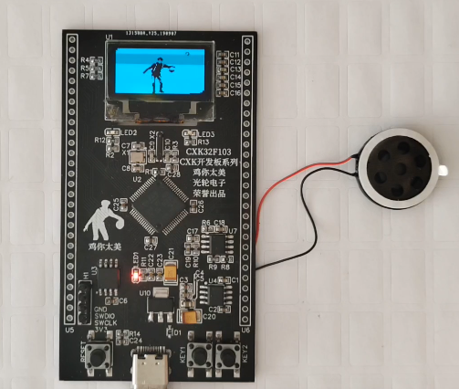
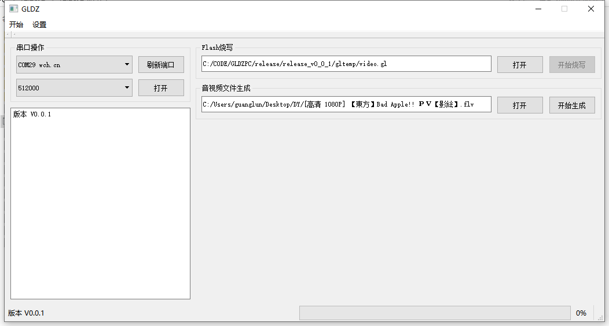

CXK开发板
简介
CXK开发板就是一款基于STM32F103 MCU的开发板。
源码和资料
开发板音视频播放源码【开发环境：Vscode PIO】
PC上位机【开发环境：QT5.6.0 qt-opensource-windows-x86-mingw492-5.6.0】
配置
| 项目 | 说明 |
|---|---|
| STM32F103RCT6 | ST MCU |
| W25Q32 | 4MB Flash |
| CH340N | 串口调试通讯 |
| NS8002 | 音频功率放大器 |
| OLED | 128*64 |
说明
-
音视频都未经压缩，目前视频是20帧每秒，音频是8KHz的采样，音频播放底噪比较大，效果不是太好。
-
上位机使用ffmpeg对输入的视频（理论上各种格式都可以）进行处理，最终生成一个.gl文件（我自定义的格式），将之通过串口烧写到板载的W25Q32 Flash上，目前使用的Flash比较小，所以限制了生成文件的大小，最大生成1min30s时长的烧写文件。
图片及演示视频

